아야 소피아 (Hagia Sophia) 이야기 (2) - 원과 삼각형
게시: 2026-08-06T06:30:59+09:00
사각형 건물 위에 거대한 돔을 얹는다는 역학적 난제를 숙제로 받은 것은 뜻밖에도 건축가가 아니라 수학자이자 물리학자였던 밀레토스의 이시도로스(Isidore of Miletus)와 트랄레스의 안테미오스(Anthemius of Tralles)였습니다. 이들은 건축가로 훈련받은 적이 없는 순수 과학자였으나, 수학자답게 이시도로스는 알렉산드리아의 헤로(Hero)가 쓴 '볼팅(Vaulting, 천정곡면/아치)에 대하여'라는 책에 주석을 달기도 하는 등 기본적인 건축 이론에 대해서는 알고 있었습니다. 이들이 당면한 문제를 해결하기 위한 솔루션으로 고안해낸 기법은 펜던티브(pendantive)였습니다.
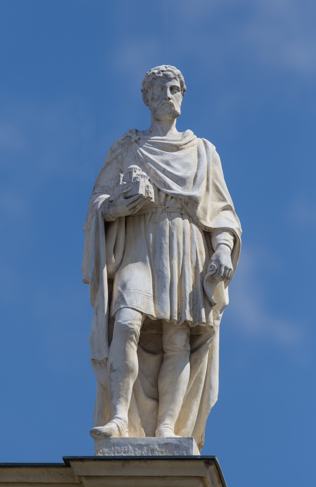
(아야 소피아의 건축가 중 하나인 이시도로스입니다. 그러나 이 석상은 오스트리아 빈에 있는 것으로서, 실제 인물 모습과는 전혀 다를 것 같습니다.)
펜던티브라는 것은 아래 그림에 보이는 것처럼, 사각형 건물 위에 원형의 돔을 얹기 위해, 네 모서리에 세우는 오목한 곡면의 삼각형 구조물을 말합니다. 각각의 삼각형 아래쪽은 사각형 네 모서리의 기둥에서 뾰족한 점으로 시작하고, 위쪽으로 가면서 점점 넓어지면서 서로 연결되어 완벽한 원을 그리게 됩니다. 그 원 위에 돔을 얹으면 하중이 네 기둥으로 정확히 흘러내려가는 것이지요.
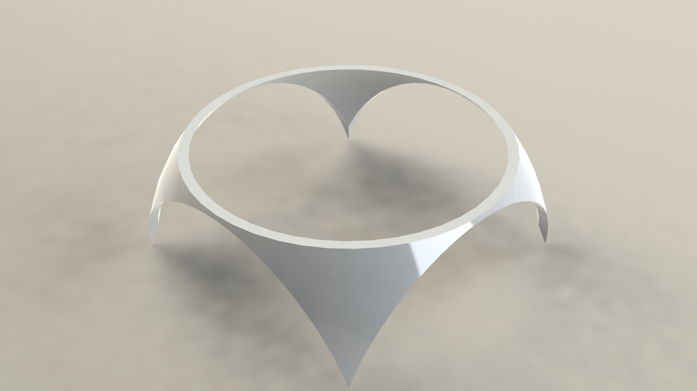 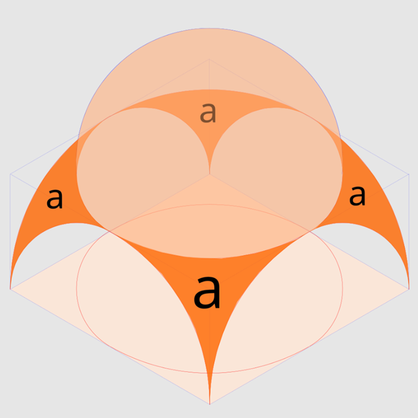
(펜던티브가 무엇인지 기하학적으로 보여주는 그림입니다.) 이 펜던티브 구조는 이시도로스와 안테미오스가 최초로 발명한 기법은 아닙니다. 시리아의 라타키아(Latakia)나 제라시(Jerash) 등지에 남아있는 기원후 2~3세기 경 로마 시대의 소규모 석조 무덤, 목욕탕, 또는 신전의 오목한 귀퉁이 천장에서 아주 작은 형태의 펜던티브 시도가 이미 발견되는 등, 여기저기서 펜던티브에 대한 기본 구상은 이미 사용되고 있었습니다. 또, 당시 로마 및 비잔틴 제국과 경쟁 관계에 있던 사산조(Sassanid) 페르시아에서는 스퀸치(squinch, 쏠갯돌/줄임아치)라는 형태의 엇비슷한 솔루션을 큰 규모로 쓰고 있었습니다. 스퀸치라는 기법은 사각형 모서리 공간에 작은 대각선 아치나 오목한 벽두렁(모서리 틈새)을 덧대어 사각형을 팔각형으로 만들고, 다시 팔각형 모서리에 소형 아치를 올려 십육각형으로 좁혀가면서 그 위에 둥근 돔을 올리는 기술입니다. 스퀸치로도 이론상으로는 아야 소피아 같은 대형 돔을 얹을 수 있었습니다. 뿐만 아니라, 정밀한 계산과 까다로운 곡면 가공 등을 필요로 하는 펜던티브에 비해 스퀸치는 직선의 석재를 연결하여 만드는 것이라서 훨씬 쉽게 만들 수 있었습니다.
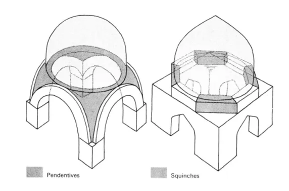
(펜던티브와 스퀸치의 차이점을 보여주는 그림입니다.)
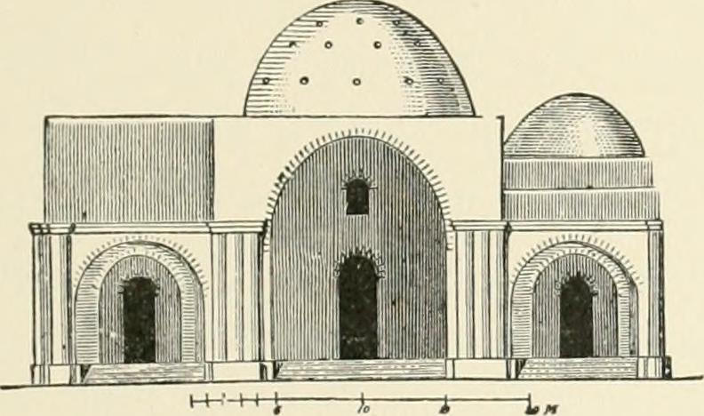 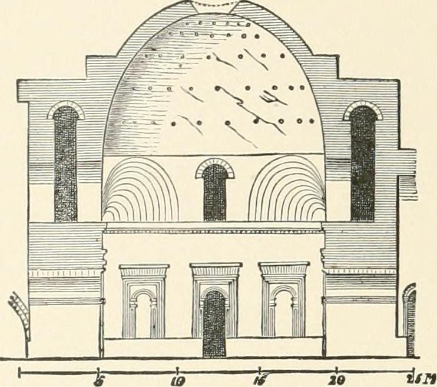
(스퀸치 기법으로 건물 위에 커다란 돔을 올렸던 사산조 페르시아의 아르다쉬르(Ardashir) 궁전입니다. 3세기 초에 지어졌으며, 현재 이란 남부에 있습니다.)
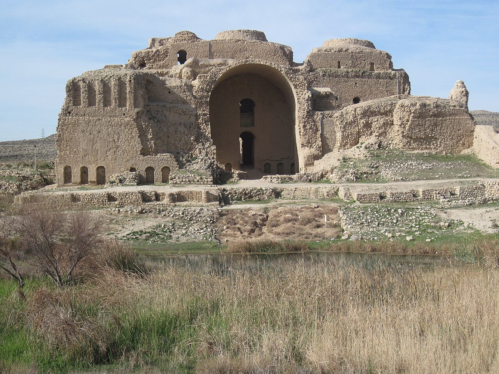
(현재는 저렇게 폐허가 되어 있습니다.)
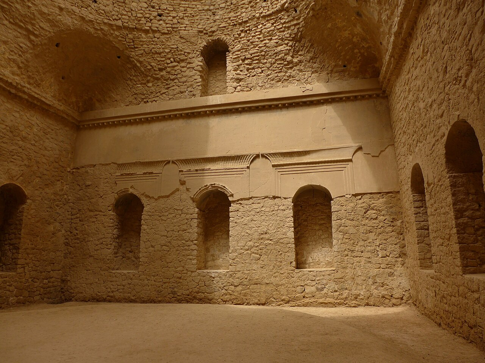
(내부의 모습입니다. 스퀸치 구조가 귀퉁이에 보입니다.) 하지만 아야 소피아에 사용된 펜던티브 기법은 규모면에서나 기술적 혁신면에서나 특히 미적인 측면에서나, 스퀸치와는 비교할 수 없는 압도적인 우월함을 자랑하는 것이었습니다. 스퀸치는 어디까지나 직선의 석재들을 큰 각도로 연결하며 쌓아올려 4각형에서 8각형으로 또 더 나아가 16각형으로 점진적으로 변환되는 구조였습니다. 따라서 매끈하게 하나로 이어지는 곡면이 아니라 여러 조각이 이어붙은 듯한 각진 인상을 줍니다. 그리고 결정적으로, 하중이 여전히 방 전체 벽면에 어느 정도 분산되어 걸리기 때문에, 벽면을 통째로 비워 커다란 창문을 낼 만한 여유가 나오지 않습니다. 또 아야 소피아처럼 엄청난 규모의 돔을 올리기에는 구조학적으로 부적절했습니다.
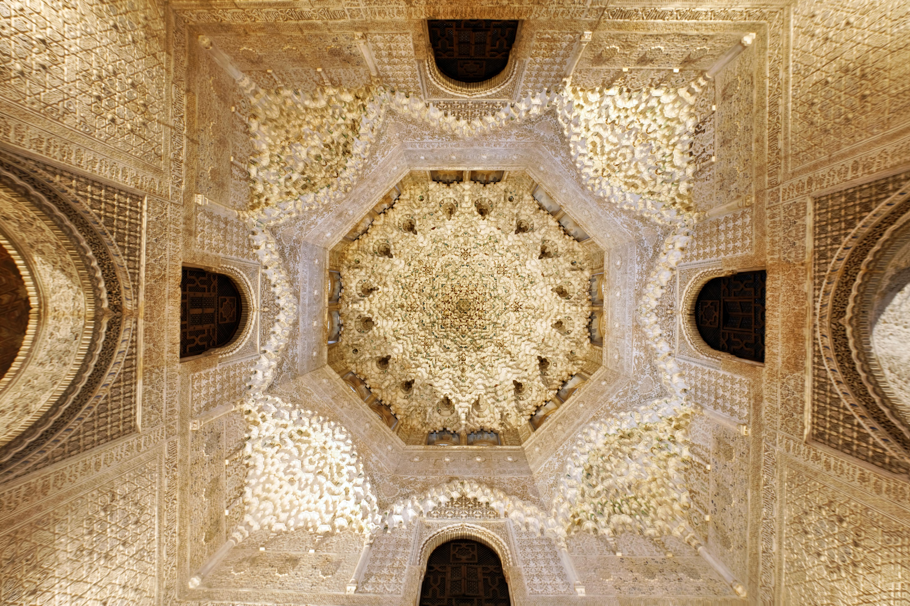
(스페인 그라나다에 있는 알함브라 궁전 '두 자매의 방'(Sala de las Dos Hermanas)의 돔입니다. 저런 돔 내부의 장식 기법을 무카르나스(muqarnas)라고 하는데, 근본적으로는 스퀸치 기법에서 비롯된 것입니다. 매우 아름답기는 하지만, 내부에서 돔을 올려다볼 때 원형이 아니라 직선을 연결한 모습이 눈에 확 들어옵니다. 또 기본적으로 저 벽면이 돔의 하중을 견뎌야 하기 때문에, 돔 아래에 자연 채광을 위한 창문을 낼 여유가 없다는 것이 큰 약점입니다.)
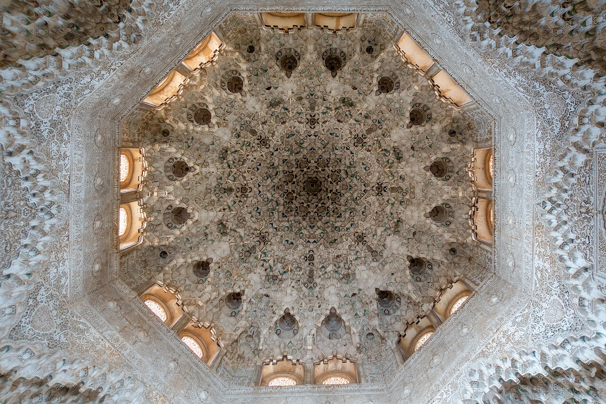
(역시 알함브라 궁전 중 '두 자매의 방'의 다른 돔입니다. 여기도 무카르나스 장식이 되어 있는데, 여기엔 돔 바로 밑에 창문이 있습니다. 다만, 창문 사이에 굵직한 기둥들이 눈에 거슬리고, 또 여전히 돔의 연결부가 원형이 아니라 직선을 연결한 것이라는 점이 눈에 들어옵니다. 저런 것들이 바로 스퀸치의 단점입니다.) 이렇게 스퀸치가 '모서리를 깎아 얼추 둥글게 만드는' 실용적 타협책이었다면, 펜던티브는 애초에 돔과 사각 평면을 하나의 기하학적 원리로 통합해버린, 훨씬 정교하고 근본적인 해법이었습니다. 아야 소피아에 구현된 펜던티브는 그 규모뿐만 아니라 그 기하학적 아름다움에 있어서 스퀸치 기법을 압도할 뿐만 아니라, 거대한 돔의 엄청난 하중을 완벽한 원형으로 분산시킨 뒤 돔에서 떨어진 4개의 기둥으로 부드럽게 집중시킨 덕분에, 돔 바로 아래에 창문을 잔뜩 낼 수 있었습니다. 그래서 이야 소피아를 완성한 이후 이 성당 내부에 들어가 위를 올려다 본 사람들은 '거대한 돔이 하늘에서 늘어뜨린 보이지 않는 쇠사슬에 매달린 것처럼 공중에 둥둥 떠있다'라며 찬탄을 금치 못했습니다.
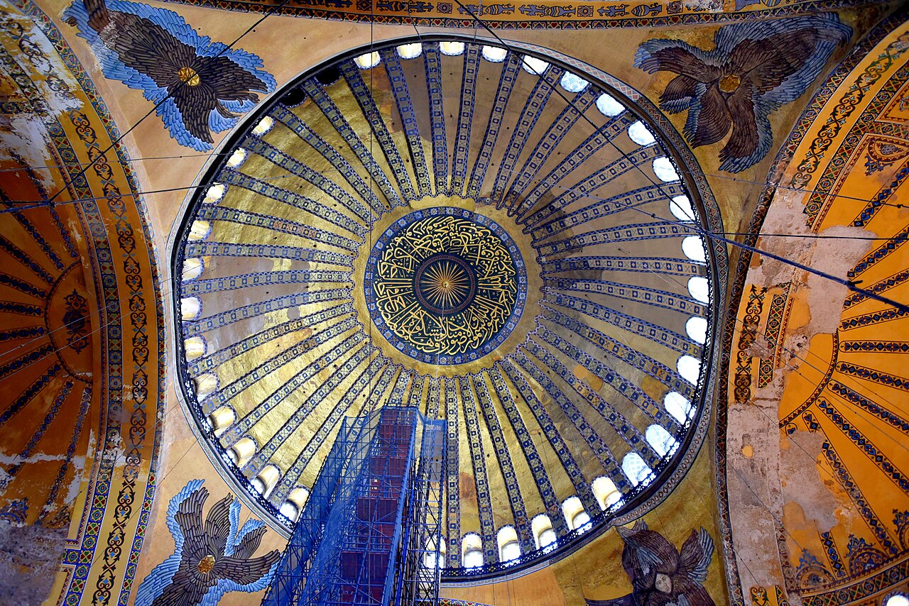
(이것이 바로 아야 소피아에 구현된 펜던티브의 기하학적인 아름다움입니다. 특히 저 돔 바로 아래에 창문들이 뺵빽히 늘어서서, 마치 돔 자체는 하늘에 떠있는 것같은 착각을 일으키게 합니다. 저 4개의 펜던티브 삼각형에 그려진 기묘한 모양의 그림에 대해서는 아래에 따로 적겠습니다.)
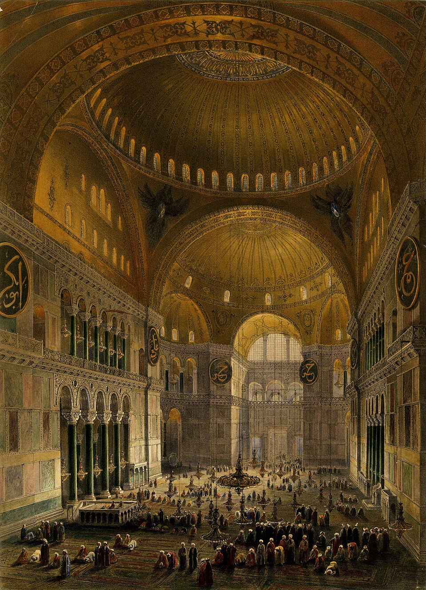
(가끔 보면 사진보다는 그림이 그 웅장함을 더 잘 묘사하는 것 같습니다. 이건 1852년에 묘사된 그림입니다.)
이 펜던티브 기술은 이후 세계 건축사를 완전히 바꿔놓았습니다. 동방에서는 오스만 제국이 콘스탄티노플을 점령한 뒤, 궁정 건축가 시난(Mimar Sinan)을 필두로 아야 소피아의 펜던티브 구조를 철저히 연구하고 응용했습니다. 블루 모스크(술탄 아흐메트 모스크)나 셀리미예(Selimiye) 모스크 같은 오스만 양식의 수많은 명작들이 모두 아야 소피아의 펜던티브 기법을 계승하고 더욱 발전시킨 결실입니다. 아야 소피아가 워낙 깊은 인상을 남겼기에, 이후 오스만 투르크의 새로운 모스크들은 거의 대부분 아야 소피아의 모습을 본떠 만들어졌던 것입니다. 서방 서유럽 역시 마찬가지였습니다. 르네상스와 바르크 시대로 넘어가며 미켈란젤로, 브라만테 등 위대한 거장들이 서양 기독교의 중심인 바티칸 성 베드로 대성당(San Pietro in Vaticano)의 거대한 돔을 설계할 때 채택한 핵심 구조가 바로 이 펜던티브였습니다. 성 베드로 대성당 돔 바로 아래를 내려다보면 네 개의 거대한 펜던티브가 돔을 완벽하게 떠받치고 있는 모습을 확인할 수 있습니다.
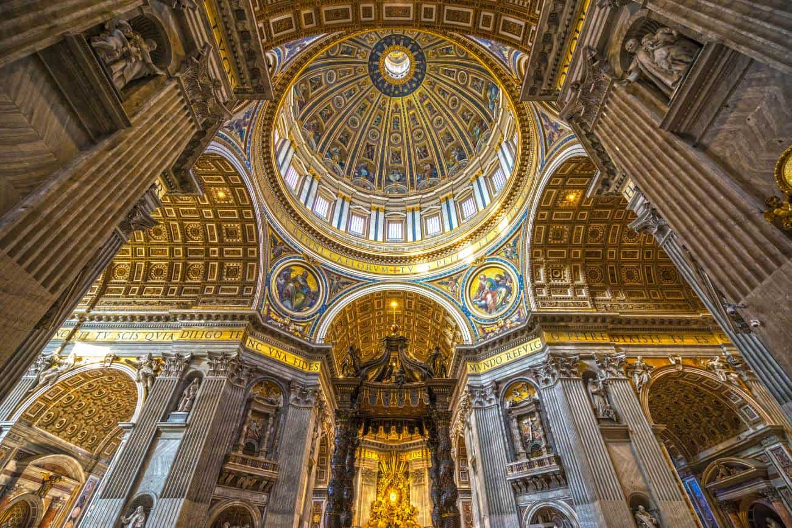
(바티칸의 성 베드로 성당 내부의 돔과 펜던티브입니다.)
펜던티브 구조는 필연적으로 4개의 삼각형 공간을 내부에 만들게 됩니다. 특히 그 4개의 삼각형은 하늘을 상징하는 돔과 인간이 사는 땅을 상징하는 사각형 건물 내부를 연결하는 곳이기 때문에 상징성이 매우 큽니다. 그래서 아야 소피아의 4개의 펜던티브에는 네 명의 세라핌(Seraphim, 천사)이 그려져 있었습니다. 신과 인간을 연결하는 존재를 상징하는 것이지요. 특이한 것은 그 세라핌의 모양이, 현재의 우리가 보기에는 상당히 기괴하다는 것입니다. 성경 《이사야서》 6장에 세라핌의 모습에 대해 다음과 같이 나옵니다. 웃시야왕이 죽던 해에 나는 여호와를 보았다. 그분은 높이 들린 보좌에 앉아 계셨으며 그 옷자락은 성전을 가득 채웠다. 그분의 주위에는 각각 여섯 개의 날개를 가진 스랍 천사들이 둘러서 있었는데 모두 두 날개로 얼굴을 가리고 두 날개로는 발을 가렸으며 나머지 두 날개는 날아다니는 데 사용하였다. 그들은 서로 화답하며 이렇게 노래하였다. “거룩하다! 거룩하다! 거룩하다! 전능하신 여호와께서 거룩하시니 온 땅에 그 영광이 충만하구나.”
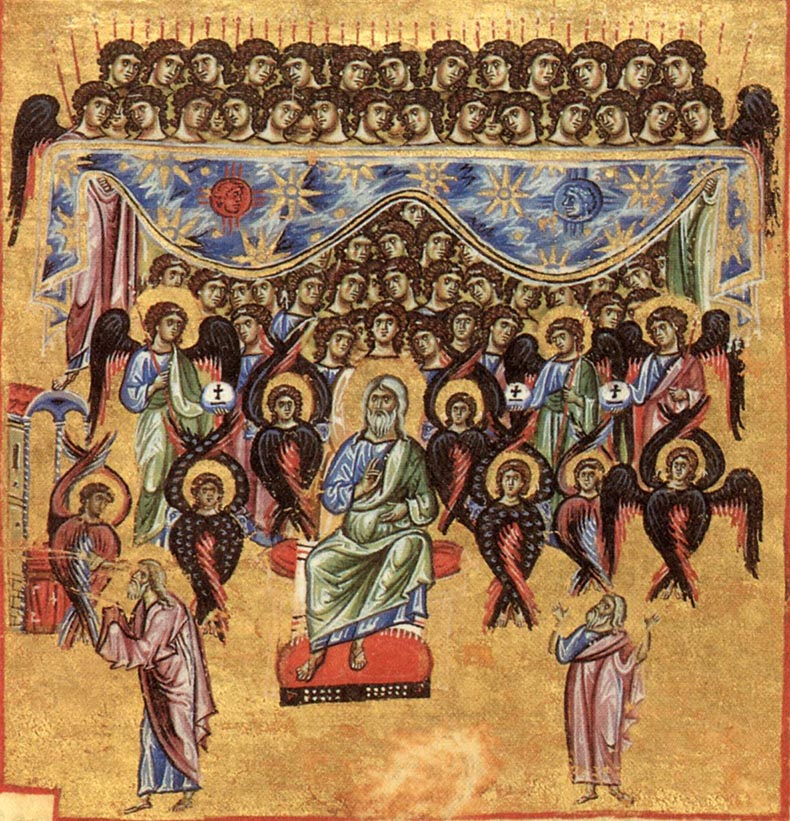
(성화에 묘사된 세라핌(Seraphim)입니다. 원래 이 단어의 단수형은 seraph라서, 세라핌이라는 말 자체가 복수입니다. 직역하면 불타는 자라는 뜻이라고 합니다.)
그래서 아야 소피아의 세라핌들은 원래 얼굴도 가려야 할 것 같은데, 아야 소피아뿐만 아니라 다른 대부분의 세라핌 그림에서도 얼굴 주변에 깃털이 가득하긴 하지만 얼굴은 노출된 형태로 나와 있습니다. 게다가 이 세라핌들은 아마도 유스티나이누스 1세 당시에는 원래 없었던 것이라고 합니다. 당시 비잔틴 제국에선 서유럽 기독교와는 달리 우상 숭배를 꺼리는 분위기라서, 마치 오늘날 이슬람처럼 장식은 주로 기하학적인 이미지 등으로 장식했다는 것입니다. 그러다 9세기 중반 성상 파괴 운동이 끝난 후 인물과 천사 모자이크가 추가되기 시작했고, 오늘날 우리가 보는 저 세라핌은 이런저런 붕괴 사고 이후 14세기에 보수작업을 거치면서 그려넣어진 것이라고 합니다. 이후 오스만 투르크 정복 이후 우상 숭배를 극혐하는 이슬람 전통에 따라 그 얼굴들이 회칠 등으로 가려졌다가, 복원 작업을 거쳐 현재는 하나의 세라핌 얼굴이 공개되고 있습니다.
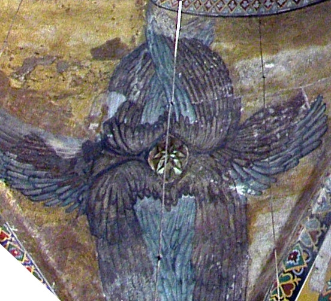
(기존의 세라핌은 이슬람 당국에 의해 저렇게 회칠이나 금속판 등으로 얼굴이 가려져 있었습니다.)
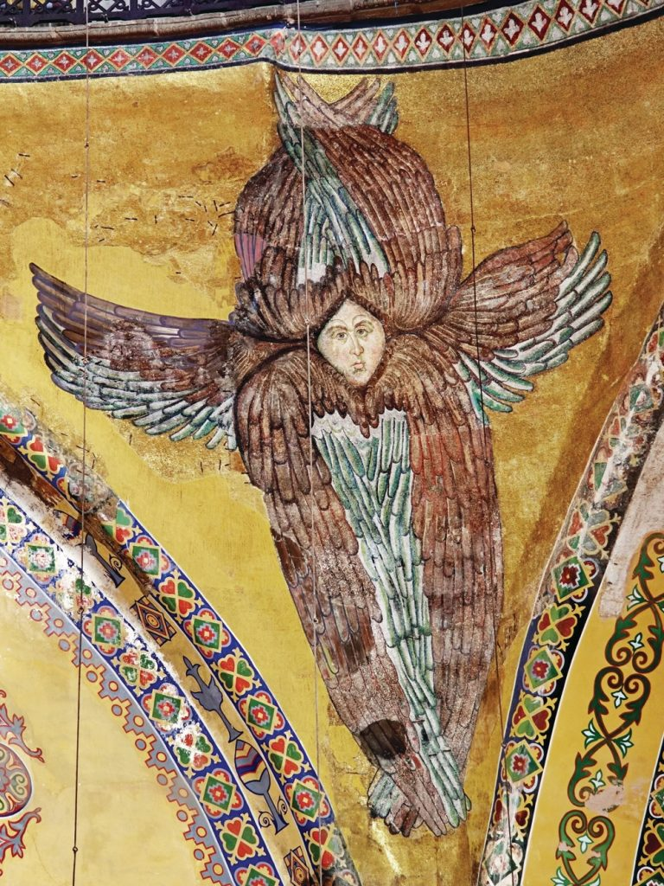
(이것이 현재 얼굴이 공개된 세라핌입니다.)
아야 소피아에는 세라핌이 그려져 있지만, 바티칸 성 베드로 대성당 (San Pietro in Vaticano)이나 베네치아 산 마르코 대성당 (Basilica di San Marco) 같은 서유럽의 돔을 갖춘 대성당들에서는 펜던티브의 네 삼각형 자리에 4대 복음서의 저자들(마태오, 마르코, 루카, 요한) 또는 그들을 상징하는 4가지 상징(사람, 사자, 황소, 독수리)을 그려 넣는 것이 표준적인 배치로 자리 잡았습니다. 신의 말씀을 세상 사방으로 전파하는 기둥이라는 의미를 담은 것입니다.
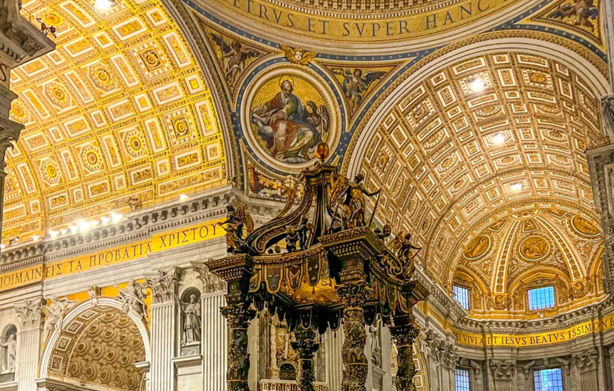
(바티칸의 성베드로 성당 내부입니다. 저기 삼각형 펜던티브에 그려진 성인이 누군지 알아보시겠습니까? 오른쪽에 독수리가 그려져 있으니 요한복음을 쓴 요한입니다.)
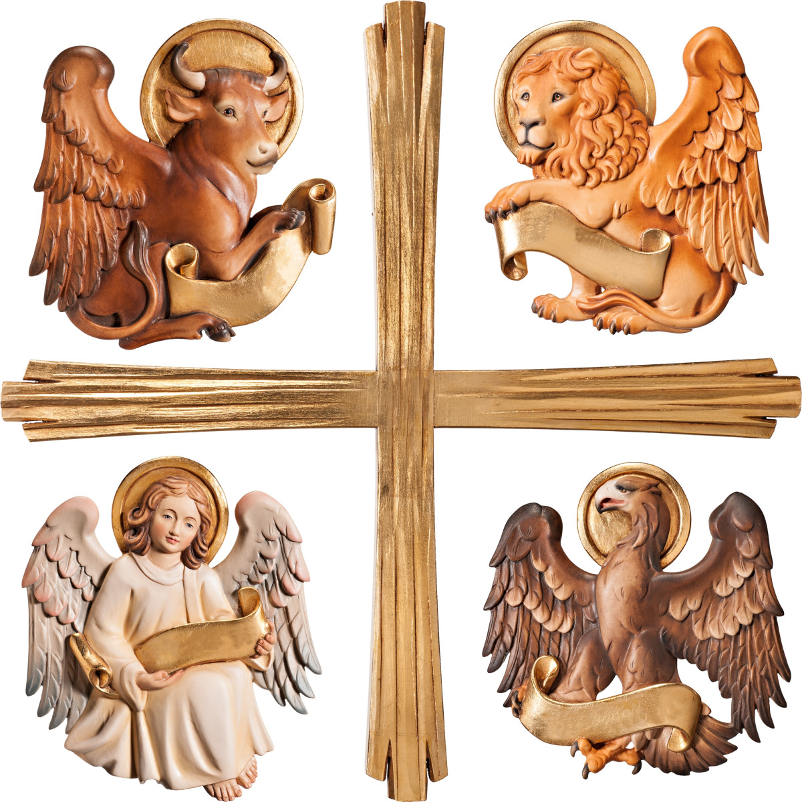
(마태(Matthew) : 날개 달린 사람 (또는 천사)입니다. 마태복음이 예수 그리스도의 다윗의 후손이라는 인간적 족보로 시작하며 예수의 인성을 상징하기 때문입니다. 마가(Mark) : 사자입니다. 마가복음이 세례자 요한이 광야에서 부르짖는 소리로 시작하여, 광야의 왕인 사자의 포효처럼 당당한 권위와 예수의 왕권을 상징하는 것입니다. 누가(Luke) : 황소입니다. 누가복음이 사가랴 제사장의 제사 이야기로 시작하기 때문입니다. 황소는 구약 시대의 대표적인 희생 제물로서, 인류를 위해 십자가에서 매달리신 예수의 희생을 상징합니다. 요한(John) : 독수리입니다. 요한복음이 지상의 역사 대신 "태초에 말씀이 계시니라"라는 신학적 서두로 시작하여, 하늘 높이 나는 독수리로써 예수의 신성을 상징합니다.)
이렇게 두서 없이 쓴 아야 소피아의 펜던티브 이야기를 마무리합니다. 다음 주에는 지난 가을 유럽 여행 마지막 도시였던, 오스트리아 빈 관련 이야기로 찾아뵙겠습니다.